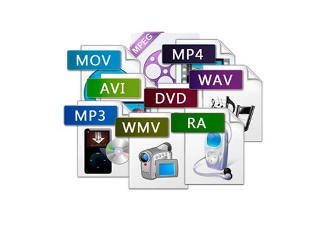

1. La codificación de vídeo convierte secuencias de imágenes (fotogramas) en un archivo de datos comprimido. Los codecs (codificadores-decodificadores) de vídeo, como H.264, H.265 (HEVC) o VP9, se utilizan para reducir el tamaño del archivo manteniendo una calidad de imagen aceptable. 2. La codificación de audio convierte señales de sonido en un formato digital comprimido. Los codecs de audio, como MP3, AAC, o Opus, se encargan de reducir el tamaño del archivo mientras preservan la calidad del sonido.
